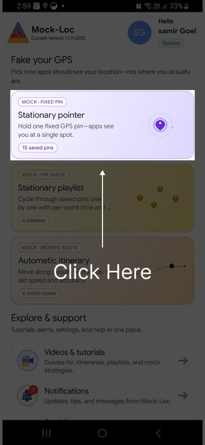
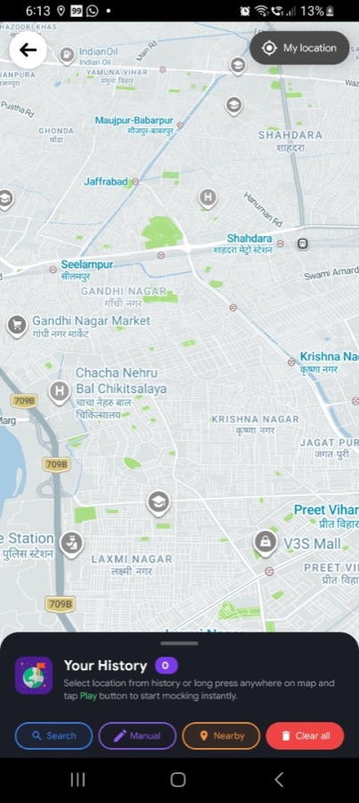
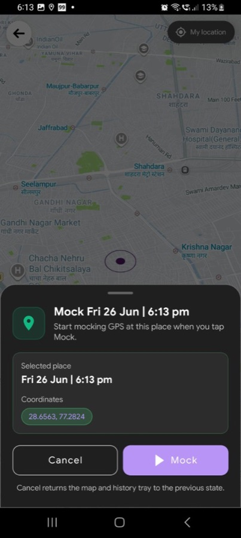
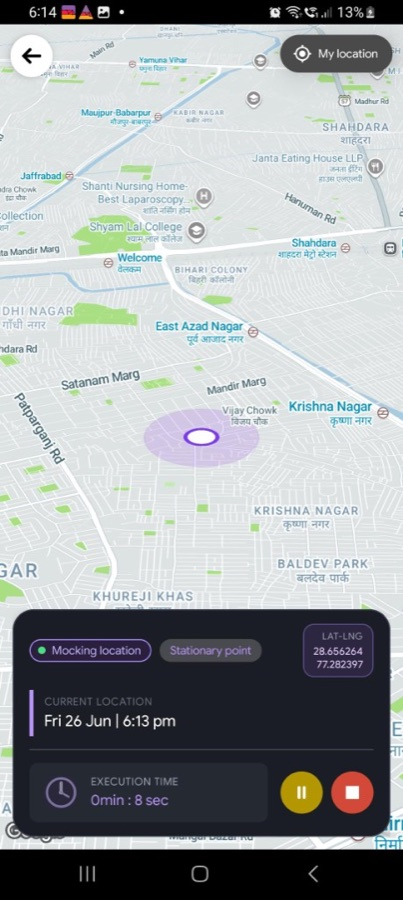
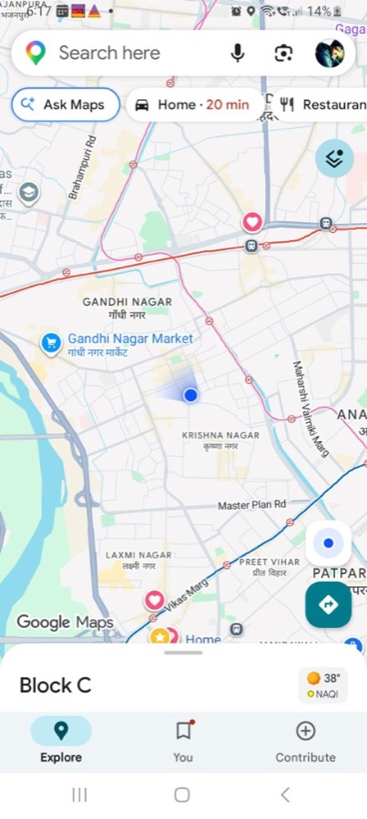

How to start a stationary mock
These steps match the Mock Loc flow: long press selects the point, the bottom sheet confirms it, the Mock button starts playback, and you can verify the result in any app that reads GPS.
From Mock Loc, open the Stationary Pointer module. You will see the map, the saved location tray, and quick actions like Search, My location, Manual, and Nearby.

Touch and hold the exact place you want to mock. The app drops a marker at that coordinate and moves the camera to it. Long press works only when no stationary player is already running.

Mock Loc shows a bottom sheet with the selected point name and coordinates, so you can confirm before the mock starts. If you cancel, the map and history tray return to the previous state.

When you tap Mock, Mock Loc saves the new point to your history if needed and starts stationary location playback. The marker changes to a pulsing active state and player controls appear.

Leave Mock Loc running and open Google Maps, Uber, or any app you want to test. Your current location should appear at the mocked point—not where you are physically standing. If the pin has not moved yet, refresh the map or reopen the app once.

One selected point, held steady
Stationary Pointer keeps your GPS at one spot. Unlike routes or playlists, nothing moves until you press Stop.
-
One fixed spot
Apps read one GPS coordinate until you stop the mock.
-
Long press ready
Pick a place on the map without search or typing.
-
Saved to history
Mock the same place again from your saved pins.
What happens after you tap Mock
Mocking starts right away. The point goes live, the map updates, and other apps begin reading your mocked GPS.
-
Active marker on map
The pin pulses so you can see the mock is running.
-
Stop from anywhere
Use player controls or the notification to pause or stop.
-
Apps see the mock
Google Maps and other apps read the mocked coordinates.
Quick tips before you long press
Small choices that make the first mock smoother.
-
Use long press when you see the place
Best when the location is already visible on the map.
-
Use Search for names
Find a business, address, or landmark by name instead.
-
Avoid your exact current spot
Android may not need to simulate where you already are.
-
Stop other mocks first
End any route, playlist, or stationary mock before starting a new one.